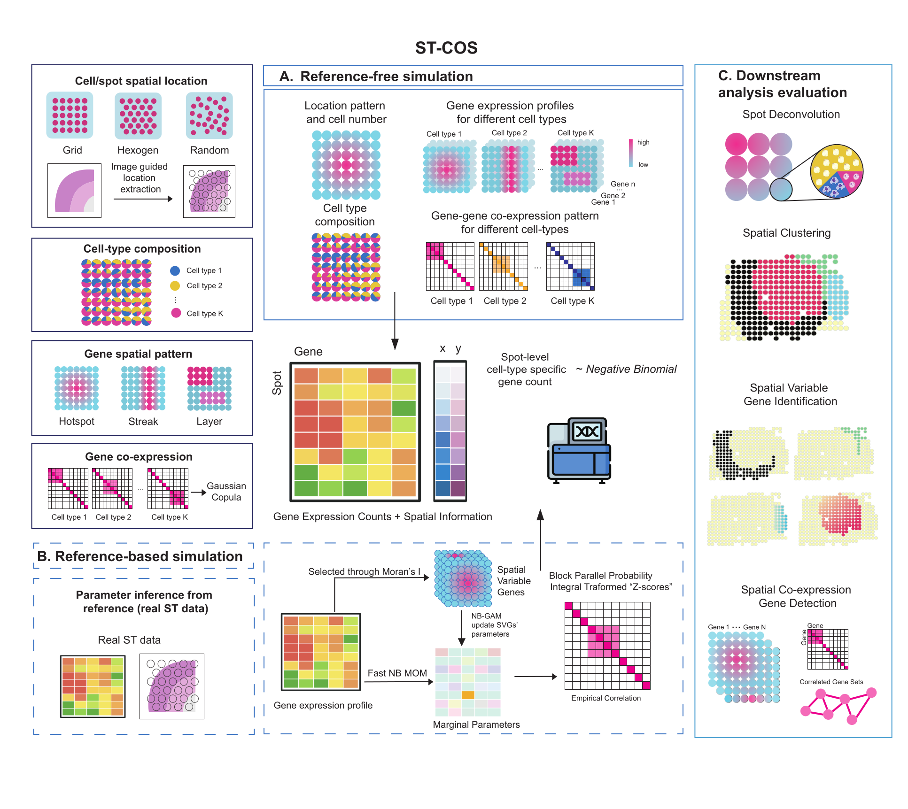

ST-COS simulates spatial transcriptomics data with configurable spatial gene patterns, cell-type composition, negative-binomial marginals, and explicit latent gene-gene dependence.

| Goal | Start here |
|---|---|
| Design cell types, spatial patterns, and gene modules from scratch | Reference-free tutorial |
| Fit a model to an observed spatial transcriptomics dataset | Reference-based tutorial |
| Upload a histology image or coordinate file and design a simulation interactively | Image-guided Shiny app |
| Install the package and check input dimensions | Installation and inputs |
ST-COS separates five parts of a simulation:
This separation lets users change one component while holding the others fixed, which is useful for controlled benchmark scenarios and counterfactual experiments.
The specified correlation matrix is a latent Gaussian target. Pearson and Spearman correlations measured from the final counts can be smaller because of discretization, sparsity, and spot-level mixing.